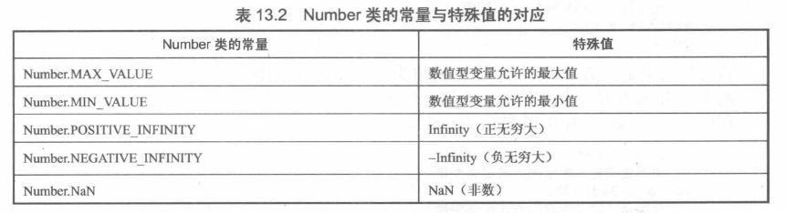

JavaScript是弱类型脚本语言，声明变量时无需指定变量的数据类型。
JavaScript变量的数据类型是解释时动态决定的。但JavaScript的值保存在内存中时，也是有数据类型的。
JavaScript的基本数据类型有如下5个：
JavaScript的数值类型不仅包括所有的整形变量，也包括所有的浮点型变量。
JavaScript语言中的数值都已IEEE 754-1985双精度浮点数格式保存。
支持科学计数法。其语法格式如下：
<num1>E<num2>
这种形式的值为：num1*10的num2次方。E为间隔符号，E不区分大小写。以下为例子
var a,b;
a = 5E2;
b = 1.23e-3;
var x = 1.7976931348623157e308;
x = x + 1e292;
var y = -1.7976931348623157e308;
y = y - 1e292;
z = y + 3E3000;
JavaScript中的算术运算符允许除数为0（除数和被除数也可同时为0，得到的结果是NaN。）正数除以0的结果是Infinity，负数除以0的结果就是-Infinity。
a1 = 1.7976931348623157e308;
b1 = 0;
NaN是另一个特殊的数值，它是Not a Number三个单词的首字母，表示非数。0除以0，或者以Infinity执行算术运算都将产生NaN的结果。
如果算数表达式中有个NaN的数值变量，则整个算数表达式的值都是NaN。
NaN与Infinity和-Infinity不同的是，NaN不会与任何数值变量相等，也就是NaN==NaN也返回false。那如何判断某个变量是否NaN呢？JavaScript专门提供了isNaN()函数来判断某个变量是否为NaN。
var x = 0/0;
function isNaNN(x){
if( isNaN(x)){
alert("x是NaN类型的")；
}
}
JavaScript提供了一些方法，可访问数值的特殊值，特殊值通过JavaScript的内嵌类Number访问，如下表所示：
关于浮点型数，必须注意其精度丢失的问题，以下是例子：
var a4 = .3333;
var b4 = a*5;
浮点数计算产生的问题，在很多语言中都会出现。
对于浮点数的比较，尽量不要直接比较，推荐使用差值法----通过判断两个数的差值是否小于一个足够小的数即可认为是相等的。